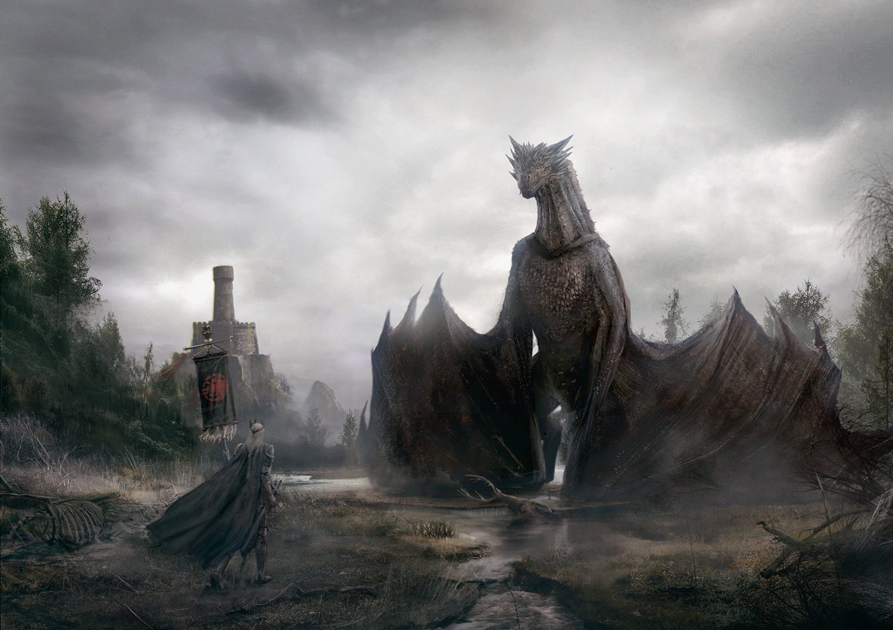
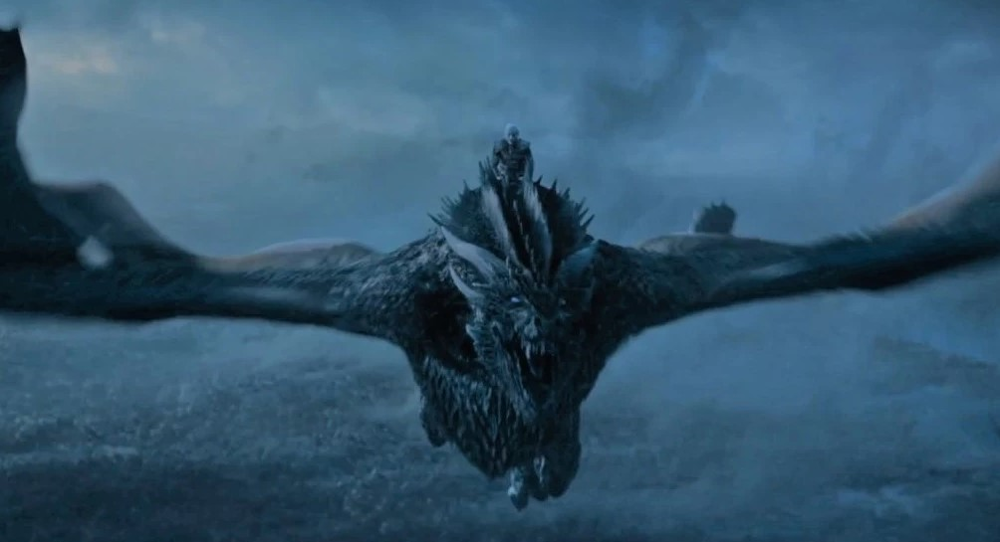

A História dos Dragões em Game of Thrones: Criaturas Míticas e Poderosas
A história dos dragões em Game of Thrones é intrinsecamente ligada à Casa Targaryen, uma dinastia que dominou Westeros por séculos graças à sua capacidade de domar e montar essas criaturas lendárias.
A Era dos Dragões:
Valíria: Acredita-se que os dragões tenham se originado na antiga cidade de Valíria, onde os Targaryen aprenderam a domá-los e a usá-los em suas conquistas.
Conquista de Westeros:
Aegon, o Conquistador, e suas irmãs, Rhaenys e Visenya, usaram seus dragões, Balerion, Meraxes e Vhagar, respectivamente, para unificar os Sete Reinos.
Domínio Targaryen:
Por séculos, os Targaryen reinaram em Westeros, com seus dragões como símbolo de poder e autoridade. Os dragões eram criados em grandes fossos, alimentados e cuidados como membros da família.
Os dragões
Conheça abaixo os principais dragões do universo de Game of Thrones e House of The Dragon
Balerion: o Terror Negro
Balerion é, sem dúvida, um dos dragões mais icônicos e poderosos do universo de Game of Thrones e House of the Dragon. Conhecido como o Terror Negro, sua história se entrelaça com a própria fundação do reino dos Targaryen em Westeros.Aegon Targaryen, montado em Balerion, liderou a Conquista de Westeros. Juntamente com suas irmãs-esposas e seus dragões, Vhagar e Meraxes, Aegon unificou os Sete Reinos sob o domínio Targaryen. O tamanho e o poder de Balerion foram cruciais para a vitória, pois sua sombra aterrorizava os inimigos e suas chamas consumiam castelos inteiros.
Vhagar: A Dragão Mais Velha de Westeros
Vhagar é uma figura imponente e lendária no universo de House of the Dragon. Considerada a dragão mais velha de Westeros, sua história se entrelaça com os momentos mais cruciais da Casa Targaryen.Vhagar eclodiu muito antes da Conquista de Aegon Targaryen, durante o Século de Sangue. Sua idade exata é desconhecida, mas nos livros, é mencionado que ela morreu aos 181 anos, o que a torna uma das criaturas mais antigas de Westeros.
Vermithor: A Fúria de Bronze
Vermithor é um dos dragões mais icônicos e poderosos do universo de A Casa do Dragão. Conhecido como a Fúria de Bronze, ele desempenhou um papel crucial na Dança dos Dragões e na história da Casa Targaryen.Vermithor era um dragão bronze de grande porte, menor apenas que Balerion e Vhagar. Sua cor escaldada e sua natureza feroz o tornaram uma figura temível nos céus de Westeros. Ele já era adulto no ano 48 d.C., o que significa que ele tinha quase 100 anos durante a Dança dos Dragões.
Meraxes: A Fúria Sangrenta
Meraxes foi um dos dragões mais formidáveis e temidos da Casa Targaryen, e um dos três que conquistaram Westeros ao lado de Aegon, o Conquistador. Conhecida como a Fúria Sangrenta, Meraxes era um símbolo de poder e destruição.Meraxes era montada por Rhaenys Targaryen, uma das irmãs-esposas de Aegon. Juntas, elas conquistaram diversas regiões de Westeros, aterrorizando os inimigos com o fogo e a fúria do dragão.

Caraxes: o Wyrm de Sangue
Caraxes, também conhecido como Wyrm de Sangue ou Verme Sangrento, foi um dos dragões mais temidos e poderosos de Westeros, com uma história rica e repleta de batalhas épicas.Caraxes descende diretamente de Balerion, o Terror Negro, o maior dragão já visto em Westeros. Essa linhagem realça sua força e ferocidade.
Syrax: A Dragão Dourada
Syrax foi a fiel companheira da Princesa Rhaenyra Targaryen, a herdeira legítima do Trono de Ferro. Com suas escamas douradas brilhantes, Syrax era um símbolo do poder e da realeza da Casa Targaryen.Syrax era mais do que apenas uma montaria para Rhaenyra; ela era uma representação viva de seu direito ao trono. Sua presença nascida do fogo reforçava a reivindicação de Rhaenyra como a verdadeira herdeira de Aegon o Conquistador.
Meleys: a Rainha Vermelha
Meleys era um dos dragões mais antigos e poderosos da história de Westeros, conhecida como a "Rainha Vermelha". Com suas escamas escarlates e a envergadura imponente, ela era um símbolo de poder e longevidade.Durante a guerra civil que assolou Westeros, Meleys desempenhou um papel crucial. Montando a poderosa Rhaenys Velaryon, a "Rainha que Nunca Foi", a dragão lutou em diversas batalhas, demonstrando sua força e ferocidade.
Sunfyre: O Dragão Dourado
Sunfyre era um dragão excepcionalmente belo, frequentemente descrito como o mais belo de todos os dragões Targaryen. Com escamas douradas brilhantes e membranas alares rosa pálido, Sunfyre era um símbolo de realeza e poder. Ele foi montado por Aegon II Targaryen durante a Dança dos Dragões.Sunfyre participou de diversas batalhas, enfrentando dragões como Meleys e Moondancer.Sua ferocidade e destreza em combate o tornaram um adversário temido.
Dreamfyre: Uma beleza mortal
Dreamfyre é um dos dragões mais velhos em House of the Dragon, com quase 100 anos de vida no início da Dança dos Dragões. Ao contrário de dragões mais jovens como Vermax e Moondancer, Dreamfyre carrega consigo a experiência e o tamanho que vêm com a idade, tornando-o um dos maiores e mais poderosos da série, mesmo que sua real dimensão ainda não tenha sido completamente revelada na tela.Dreamfyre era conhecida por sua beleza, com escamas que mudavam de cor dependendo da luz, e olhos que brilhavam como rubis. Seu nome, Dreamfyre, evocava a ideia de um sonho tornado realidade, mas também sugeria a natureza onírica e às vezes cruel da guerra.
Silverwing: A Dragão Prateada
Silverwing, ou Asaprata como também é conhecida, é uma das dragões mais icônicas de "A Casa do Dragão". Sua história está profundamente entrelaçada com a da Casa Targaryen e desempenha um papel crucial nos eventos da série.Silverwing nasceu de um ovo colocado no berço da princesa Alysanne Targaryen, criando um vínculo único e poderoso entre a dragão e sua cavaleira.Essa conexão especial se desenvolveu ao longo de muitos anos, tornando Silverwing não apenas uma montaria, mas uma companheira leal e poderosa
Seasmoke: O Dragão Cinzento
Seasmoke é um dos dragões mais importantes de "A Casa do Dragão", conhecido por sua pelagem cinza-clara e seu temperamento altivo. Sua história está intimamente ligada à Casa Velaryon e aos eventos da Dança dos Dragões.Seasmoke foi um presente da Casa Targaryen à Casa Velaryon, fortalecendo a aliança entre as duas famílias. Inicialmente, o dragão foi montado por Laenor Velaryon, o marido de Rhaenyra Targaryen.Essa ligação entre o dragão e o cavaleiro era profunda, formando uma parceria formidável.
Arrax: O Dragão Perolado
Arrax foi um dos dragões mais jovens e promissores da série "A Casa do Dragão". Montado pelo príncipe Lucerys, filho de Rhaenyra Targaryen, Arrax desempenhou um papel crucial na Dança dos Dragões, a guerra civil que devastou Westeros.Arrax era descrito como um dragão de tamanho médio, com escamas peroladas e chamas amareladas. Apesar de sua juventude, ele já demonstrava um grande potencial e era muito querido por seu cavaleiro, Lucerys.A dupla formava uma parceria forte e confiante.
Vermax: O Dragão Verde-Oliva
Vermax foi um dos dragões mais jovens e promissores a surgir durante a Dança dos Dragões. Nascido de um ovo colocado no berço de Jacaerys Velaryon, filho mais velho de Rhaenyra Targaryen, Vermax e seu cavaleiro compartilhavam um vínculo especial desde a infância.Vermax era descrito como um dragão de tamanho médio, com escamas verde-oliva e membranas alares de um tom alaranjado vibrante.Ao longo da série, vimos Vermax crescer e se desenvolver ao lado de Jacaerys.
Tessarion: A Rainha Azul
Tessarion foi uma das dragões mais jovens e belas a surgir durante a Dança dos Dragões. Conhecida como a "Rainha Azul", ela era montada por Daeron Targaryen, o irmão mais novo de Aegon II.Tessarion era descrita como uma dragão de beleza estonteante. Suas escamas eram de um azul profundo e brilhante, suas asas eram de um tom cobalto escuro, e suas garras, crista e escamas da barriga eram do tom de cobre batido.Até mesmo suas chamas eram da cor do cobalto, o que a tornava uma visão deslumbrante nos céus.
Moondancer: A Dragão Bailalua
Moondancer, ou Bailalua em tradução livre, foi uma das dragões mais jovens e ágeis a surgir durante a Dança dos Dragões. Montada por Baela Targaryen, a sobrinha de Rhaenyra, Moondancer desempenhou um papel importante na guerra civil.Moondancer era descrita como uma dragão esguia e verde-clara, com chifres, crista e ossos das asas perolados. Sua agilidade era notável, tanto no ar quanto no solo, o que a tornava uma adversária difícil de ser capturada.Essa velocidade e destreza a tornaram um símbolo de esperança para os Negros, os apoiadores de Rhaenyra Targaryen.
Sheepstealer: O Ladrão de Ovelhas
Sheepstealer, ou Ladrão de Ovelhas em tradução livre, é um dos dragões mais intrigantes e misteriosos de "A Casa do Dragão". Diferentemente dos outros dragões que tinham laços fortes com casas nobres, Sheepstealer era um dragão selvagem, vivendo livremente e sem um cavaleiro por muito tempo.Sheepstealer nasceu durante o reinado de Jaehaerys I Targaryen e ficou conhecido por seu temperamento difícil e sua preferência por ovelhas.Seu nome, aliás, é uma referência direta a esse hábito. Por anos, ele vagou pelas redondezas de Pedra do Dragão, aterrorizando os pastores e causando estragos.
Drogon: O Último Dragão
Drogon é um dos dragões mais icônicos e poderosos da saga "As Crônicas de Gelo e Fogo" e da série de televisão "Game of Thrones". Ele é o primeiro dragão a eclodir dos três ovos que Daenerys Targaryen recebeu como presente de casamento.Drogon nasceu em meio a chamas e cinzas, dentro de um funeral pira. Daenerys, ferida e desesperançosa, adentrou o fogo e emergiu com três dragões recém-nascidos.Drogon, o maior e mais agressivo dos três, foi nomeado em homenagem a seu falecido marido, Khal Drogo.
Rhaegal: O Dragão Verde e Bronze
Rhaegal foi um dos três dragões de Daenerys Targaryen, nascido dos ovos que ela recebeu como presente de casamento. Batizado em homenagem ao irmão mais velho de Daenerys, Rhaegal Targaryen, este dragão verde e bronze era conhecido por sua natureza gentil e curiosa.Assim como seus irmãos, Drogon e Viserion, Rhaegal eclodiu dentro de uma pira funerária, um evento que marcou o renascimento de Daenerys e a esperança de restaurar a Casa Targaryen.Rhaegal cresceu junto com seus irmãos, formando um vínculo profundo com Daenerys. Sua cor verde e bronze o distinguia dos outros dois dragões, e sua personalidade era descrita como mais calma e observadora.
Viserion: O Dragão de Gelo
Viserion foi um dos três dragões de Daenerys Targaryen, nascido dos ovos que ela recebeu como presente de casamento. Nomeado em homenagem ao irmão mais velho de Daenerys, Viserys Targaryen, este dragão era conhecido por sua beleza e por sua chama dourada pálida.Assim como seus irmãos, Drogon e Rhaegal, Viserion eclodiu dentro de uma pira funerária, um evento que marcou o renascimento de Daenerys e a esperança de restaurar a Casa Targaryen.Viserion cresceu junto com seus irmãos, formando um vínculo profundo com Daenerys. Sua cor creme, com detalhes dourados, o distinguia dos outros dois dragões.

O Canibal: O Dragão Selvagem de Pedra do Dragão
O Canibal era uma das criaturas mais temidas e misteriosas de "A Casa do Dragão". Ao contrário dos dragões domesticados e montados pelos Targaryens, o Canibal era um dragão selvagem, vivendo livremente em Pedra do Dragão.Seu nome, é claro, não era por acaso. O Canibal era conhecido por sua dieta macabra: outros dragões. Seja filhotes, dragões feridos ou até mesmo ovos, ele não discriminava.Essa natureza sanguinária o tornou uma lenda entre os habitantes de Pedra do Dragão.